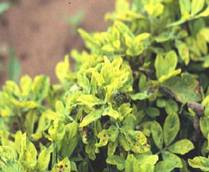
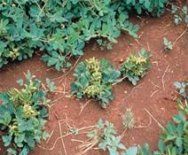

GROUNDNUT :: MAJOR DISEASE :: ROSSETTE
Rossette - Groundnut rosette assistor virus (GRAV), Groundnut rosette virus and Groundnut rosette satellites
Symptoms
The affected plants are characterized by the appearance of dense clump or dwarf shoots with tuft of small leaves forming in a rosette fashion. The plant exhibits chlorosis and mosaic mottling. The infected plants remain stunted and produce flowers, but only a few of the pegs may develop further to nuts but no seed formation.
|  |  |
Symptoms |
|
Pathogen
The disease is caused by a complex mixture of viruses viz.,Groundnut rosette assistor virus (GRAV), Ground nut rosette virus and Groundnut rosette satellites is an isometric, not enveloped and 28nm diameter (reported from India) and it gives no overt symptom in groundnut. Groundnut rosette virus is with ssRNA genome, which becomes packaged in GRAV virious and thus depends on it for aphid transmission, but produces no overt symptoms in groundnut. The groundnut rosette satellites are satellite RNAs that control the symptoms and cause the different types of rosette (chlorotic, green and mosaic).
Disease Cycle
The primary source of spread by aphid vector, Aphis craccivora and A. gossipii in a persistent manner, retained by vector but not transmitted congenitally. The virus is not transmitted by any other means like mechanical or seed or pollen. The virus can survive on the volunteer plants of groundnut and other weed hosts.
Management
- Practice clean cultivation.
- Use heavy seed rate and rogue out the infected plants periodically.
- Spray Monocrotophos or Methyl demeton at 500 ml/ha.